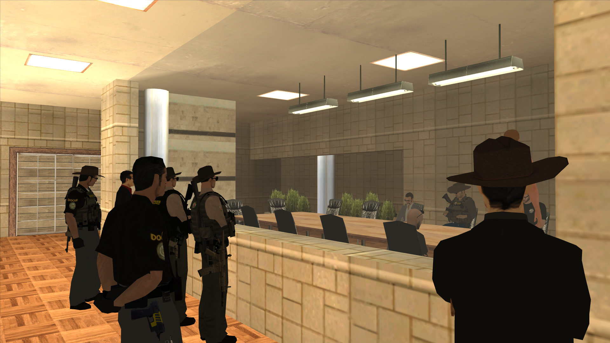

Ustanovující zasedání kongresu za období červenec. Stále žádný předseda, zvýšení bezpečnosti kongresu a dotace technickým službám.
Dne 11. července, v 18 hodin začalo ustanovující zasedání kongresu za období červenec. Ve vzduchu bylo jasně cítit napětí, co z přítomných kongresmanů vzejde po téměř dvou týdnech od začátku měsíce. Navíc chyběla téměř polovina kongresmanů.
Hned v prvním bodě kongresmani probírali návrhy na předsedu kongresu, místopředsedu kongresu a předsedu disciplinárního výboru. Na místě o tomto bodě nebylo rozhodnuto a na výsledky si budeme muset počkat ze zprávy ze zasedání kongresu.
S vědomím nedostatku času se kongresmani vrhli na řešení podnětů ve vládní podatelně. Přítomní kongresmani jednoznačně podpořili žádost o dotaci na nové sídlo technických služeb a zařízení webu, která čeká pouze na odhlasování. Dle slov kongresmana G. Leroye tato žádost leží v podatelně již tři měsíce. V následujících dnech by se proto měla dočkat rozhodnutí.
Je škoda že to tam leží tři měsíce, tohle je doslova jeden z nejsmysluplnějších podnětů co jsem za poslední půl rok viděl.
- Gerard Leroy
Po dořešení návrhů občanů nastal čas pro návrhy kongresmanů a projednání velmi očekávaných návrhů č. 167 a 170.
Návrh zákona č. 167 a jeho pozměňovací návrh by přinesl značnou odpovědnost kongresmanů za své disciplinární přestupky a také transparentnost vládní aplikace, ve které kongres často jedná. Všichni občané by v případě schválení mohli nahlížet do této aplikace a tím jasně vidět činnost kongresu. Několik kongresmanů také podpořilo návrh se slovy, že by transparentní komunikační aplikace vedla k zlepšení komunikace mezi kongresem a vězeňskou službou, pověřenou hlídat kongres. Návrh č. 170 snižuje kongresmanům plat z 15 tisíc zpět na 5 tisíc.
Významná většina kongresmanů, přítomných v jednací místnosti, podpořila zařazení obou návrhů do hlasování.
Kongresmani stihli za cca dvouhodinové jednání také projednat bezpečnost kongresu. Dle slov Steva Zayase, na sociálních sítích se tvoří tzv. ,,revolucionářské skupiny”, které hrozí zbraňovou kriminalitou. Také upozorňuje na nedostatečnou ochranu kongresu ze strany DOCARu.
Kongres dělá občas věci, které se občanům nelíbí, lidi tu zbraněmi vyhrožují svrhnutím státní moci, ale my jako spokojení občané budeme v dobré víře usedat někam jen protože nám přeci nikdo ublížit nemůže a zásadní problém je přeci ten pomyslný policejní stát.
- Steve Zayas
Kongresmani jasně projednali možné zabezpečení kongresu jako takového. Díky ne příliš častým zasedáním kongresu by to stát nemuselo přijít draho. Redakce se rozhodla, z důvodu možného ohrožení bezpečnosti kongresu, jednotlivé body neuvádět.
Na konec schůze kongresmani projednali zlepšení prostor kongresu a dali prostor přítomným občanům a jejich návrhům a otázkám.